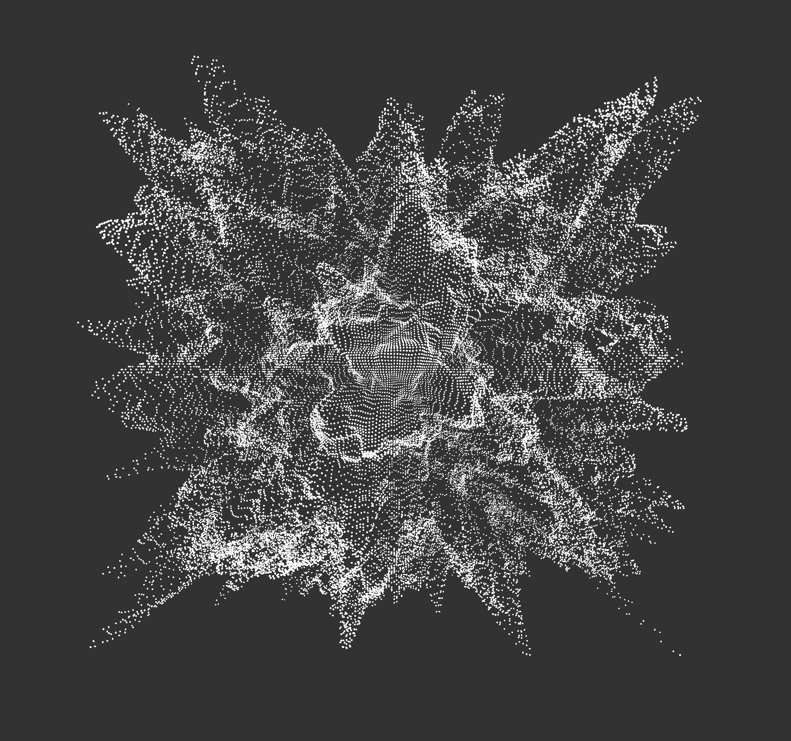

P5.js
bakuhatsu
初めてプログラミングでなんかすごい図を描いてみた。ただサンプルのプログラミングを改変したけど、ちなみに数字だけ変えたが、全然違う図になって不思議だと思う。
この爆発みたいな図は元々布みたいなやつを改変して、データの数字を自分で調整して、このようになった。
プログラミングで絵を描くのを興味を持つことになった。色んなデータを改変してみて、自分もデータを書くのを試したけど、プログラミングの知識は足りないので、足りないというより、全然持ってないは確実だ。今できるのはサンプルを変えるだけだ。プログラミングの勉強は今度の冬休みから自分で勉強しようと思って、２０２０年は自分でプログラミングをしたい。
下の図もデータを改変して、できたやつ。実は元々ヨーロッパの家具の花柄みたいの図を描きたいけど、中々うまくできなっかた。ただデータを変えるだけでうまく行かなくて、自分でデータを書いたらどんな大変さだろう。